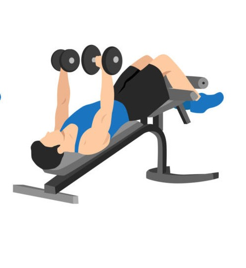

Exercise Description
The decline bench press targets the lower chest. Lie on a decline bench with a barbell above your chest, lower the bar to your chest, then press it back up to the starting position.
Reps and Sets
Beginners: 3 sets of 8-12 reps
Weights: 4-5 kg per hand
Rest time between each set: 30secs
Video Implementation